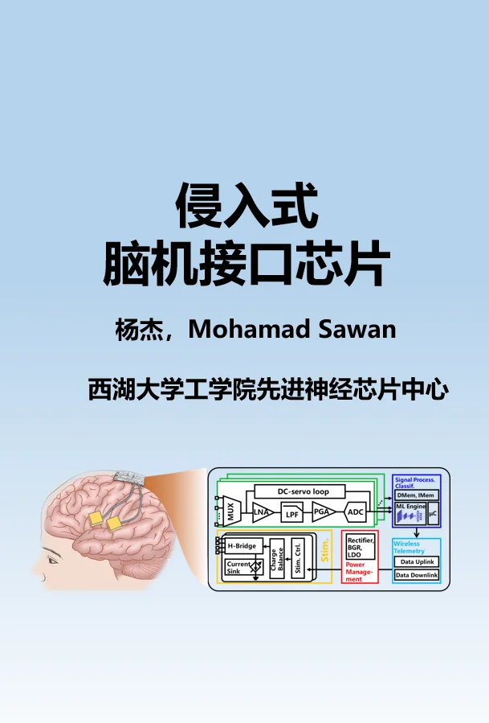

AN ONLINE RESOURCE
侵入式脑机接口芯片
杨杰、Mohamad Sawan · 西湖大学先进神经芯片中心

从神经电极到集成系统
侵入式脑机接口在神经组织与电子系统之间建立直接通信通道。集成电路将神经信号读出、处理、无线通信与刺激等功能整合到紧凑的低功耗系统中。
本资源介绍脑机接口芯片中的主要电路模块与设计方法，供相关领域的学生与研究者学习参考。
完整前言
人类与数字世界之间的通讯方式经历了不断的更迭和演进，从打孔卡、键盘、鼠标，到触摸屏，再到借助大语言模型实现的自然语言，通讯效率不断提高。这种通讯的本质是人类大脑或神经系统与数字世界的信息交流。因此，建立大脑和数字世界之间的直接通讯成为21世纪人类最终目标之一。如今，侵入式脑机接口技术在建立这种直接通讯方面取得了重要进展，正在逐步向着这一目标迈进。在脑机接口技术中，芯片扮演着重要的角色，通过将关键电路部分或全部集成在平方毫米级别大小、毫瓦甚至更低功耗的半导体芯片上，摆脱了尺寸、功耗、电缆连接等方面的限制，从而使得侵入式脑机接口系统更容易、更安全、更舒适地进行植入人体。本网页旨在梳理侵入式脑机接口芯片中的主要电路模块设计，希望为对此领域感兴趣的读者提供帮助。

以下五个技术章节为中文全文。英文参考文献亦可在线浏览。
技术章节
中文全文引用本网页
@book{yangjie_bci_2024,
title = {侵入式脑机接口芯片},
author = {杨杰 and Mohamad Sawan},
year = {2024},
note = {https://yangjie.ac.cn/book-item-bci.html}
}如有问题或建议，欢迎联系 yangjie@westlake.edu.cn。内容将持续更新。